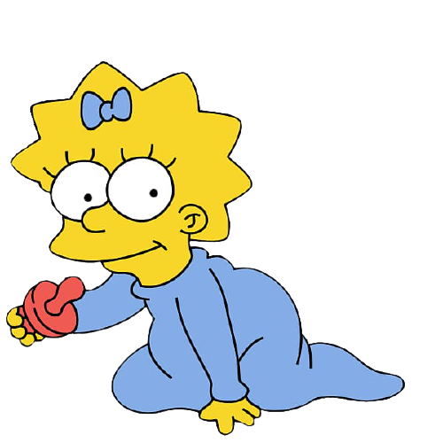

Ela é a filha mais nova de Homer e Marge. São comuns as piadas onde Homer esquece o nome dela ou até mesmo de sua existência, não são muitos os episódios onde Maggie tem destaque, mas em alguns significativos episódios podemos perceber que ela é muito inteligente.
Apesar de ser o único membro da família Simpson que não aprendeu a falar, Maggie não é unidimensional e tem muitas camadas diferentes de personalidade. Ela parece estar um pouco afastada do resto de sua família e é descrita como "a Simpson esquecida" por Homer. Quando ela, Bart e Lisa foram enviados para um lar adotivo (os Flanders) depois que seus pais foram considerados impróprios, Maggie foi a mais rápida para se adaptar e quase se juntou a eles até Marge chamar por ela e Maggie "se tornou um Simpson novamente".
Maggie mostra uma devoção muito mais forte à mãe do que ao pai, possivelmente porque Marge está sempre em casa ou fazendo compras com ela enquanto Homer está principalmente no trabalho ou no Moe's. Uma vez, quando Homer tentou se relacionar com ela, ela tentou fugir. Ela desenvolveu uma relação pai-filha com Moe, o barman, que uma vez salvou sua vida. No entanto, ela ama Homer e mais de uma vez salvou sua vida. Sem mencionar que ela disse sua primeira palavra, "papai" depois que Homer a colocou e a beijou de boa noite, embora ninguém a tenha ouvido.